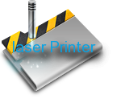

|  | 西南科技大学激光中心实验室 |
| 平移台与快门协同软件使用帮助 |
|
目录 一、安装程序 选择安装过程中使用的语言，点击ok。 接受软件协议约定。 然后选择您要安装的路径，然后点击下一步开始安装。 Linux或者Unix系统： 程序启动之后，您将看到如下的界面： 您可以看到，程序主界面上有菜单栏，工具栏，状态栏和应用程序主区域。程序主区域分为四个小区域，分别是图像栏目，信息显示栏目，平移台控制栏目，以及制造栏目。 软件安装完成之后，首次运行您需要进行注册，在光盘里找到授予您的序列号，然后在程序主界面上执行 "帮助"-- "许可"菜单命令，您将得到下面的注册页面： 单击"导入许可"您将得到一个输入栏，按照顺序输入您的软件光盘里的序列号，再单击"添加"按钮即可导入，如果您的序列号是正确的，系统将提示"成功导入序列号！"，下面，单击"应用"按钮即可。 您可以在程序工具栏或者应用程序菜单里打开系统设置。您可以单击工具栏上的设置按钮来打开，或者使用菜单命令： 系统设置—设置 来启动。您将看到下面的界面： 系统设置的界面很简明，分别为平移台参数设置，快门设置和系统语言设置。 打开图像文件很简单，单击工具栏的打开按钮或者执行 "文件"-- "打开"菜单命令。打开图像后，图像将在图像栏里缩放显示。 请注意：根据您的步长设置和平移台的尺寸限制，您的图片尺寸不应该超过限度。如果超出范围，laserprinter会弹出一个错误对话框给您以提示，您需要在选择合宜的图片以便继续。 七、平移台的手动控制和系统初始化 平移台的手动控制比较灵活。首先您需要在作任何移动之前初始化平移台，并且您需要保证没有其他的程序占用平移台，这样您可以单击"系统初始化"按钮来初始化平移台系统。平移台初始化成功之后您可以在状态栏里看到类似"XPS-C8已初始化！"的字样。平移台初始化后，您应该可以看到平移台的所有轴都会归位。 注意：如果您看到一个警告平移台初始化的时候发生了一些错误，这个一般是因为平移台上有放置不合适的重物，导致系统发生共振。这个时候您应该检查您的物件，如果只是发生了共振，但是平移台确实正确归位的话，您可以选择忽略这个警告，点击确定之后可以继续做后续的手动移位和制造操作。如果有警告发生，而且平移台没有正确归位，那么在做任何后续操作前应该排除这个错 误。 平移的手动控制：平移台的手动控制有两种方式：单步移位和任意距离移位。 在平移台手动控制区域，您可以看到有X和Y轴的输入框，输入框内可以输入您期望移动的位移量，位移量可以是正值也可以是负值，正负是相对与系统初始化后的0位置而言的，比如5表示在轴上前移5个毫米距离，-5表示往后移动5个毫米。在您输入好值之后，只需要点击输入框紧接的"+"按钮就可以移动了。 在"+"按钮的后面可以看到一组按钮"<" ">"，分别表示往前和往后移动一个毫米。 注意：如果您是连续几张图片的雕刻，并且希望对于样品的位置每次都是相同的，这时候位于平移台控制栏目里的获取当前XY坐标按钮就可以帮上您的忙了，您可以在第一次载入一张图片后先手动移动平移台，当平移台位置满意后，点击“获取当前XY坐标”按钮，记录这次的XY坐标，下次初始化后只需要输入这个坐标一次移位即可。（坐标是浮点表示的，你可以输入四舍五入后的值或者信息提示的精确表示值，比如坐标提示为X：10.05999006，Y：5.000，那么您可以输入X = 10.06，Y=5）。 快门的控制在系统设置的快门选单里面，单击按钮就可以打开和关闭快门。如果快门没响应，通常是因为串口的连接有问题。平时，您应该把快门调到关闭状态以免发生危险。 九、制造—激光刻蚀一张图像 本软件的主体功能是完成图像的激光雕刻制造过程。下面将介绍如果使用laserprinter来雕刻一张图片。 首先，点击打开按钮载入一张实现准备好的图片，打开之后，图像将在软件界面里显示。laserprinter会对您的图片做适当的处理（二值化），二值后的图像保存在系统的temp目录里面，通常您不需要关心图片是如何被二值化的。您只需要载入一长合适大小的图片就行了，laserpriner会自动完成二值处理而不需要任何干预。 接着，您需要在系统设置里设置合适的步长和扫描速度。设置好之后您可以在信息栏目里立马看到制造相关的信息，您可以看到本次制造的实际尺寸大小，还可以看到一个大致估计的制造时间。 下面，在制造栏目里单击"运行"按钮，系统就开始扫描您的图片了，您可以通过进度条来了解到 本次的运行进度和快慢。在运行过程中您可以单击"暂停"来暂停运行。暂停之后还可以接着按"运行"来继续您暂停掉的工作，系统会在之前的进度之后继续运行，而不会重新开始。 如果您是想重新开始一个制造过程，请点击"重置"按钮来重新开始您的工作。重置将会让系统重新从图像最开始位置处运行。 制造过程中，laserprinter会自动照看快门的关闭，如果您暂停当前的任务，laserprinter会自动关闭快门以确保安全。 十、系统帮助和快捷键 帮助的使用： 在软件菜单栏里您可以看到帮助菜单：子内容有帮助内容和许可，以及关于。内容是本软件的帮助文档，您可以随时查看以了解软件的使用方法。 许可用来管理您的序列号。 关于是程序的关于信息显示。 快捷键： 本软件支持使用键盘快捷键来进行某些操作（不支持windows）。 Ctrl+O用来打开图像文件。 Ctrl+Q退出程序。 Ctrl+H打开帮助文档页面。 十一、系统错误及其处理 系统的常见错误及其处理方法： 1. 图像尺寸超出范围： XPS-C8的移动范围为100mmX30mm，所以您选择的图片大小乘以系统步长之后不应该超过这个值，如果软件提示尺寸超出错误，请您修该您的图片或者设置合适的步长。 2. XPS-C8连接错误： XPS-C8使用网络通讯，如果laserprinter连接不到XPS-C8，就会提示错误，请您检查您的计算机到平移台控制器的网络连接。 3. 平移台没有初始化： 平移台在做任何移动之前应该先进行系统初始化。您只需要点击初始化按钮来初始化即可。 4. 平移台初始化的时候有错误发生： 如果平移台上有重心不对称放置的重物，平移台在移动时可能会因为发生共振而影响移动的位置。您应该检查您的物件放置，确保不会发生共振。如果平移台可以正确归位，您可以忽略这个错误。 5. 不能连接到快门或者串口错误： 快门使用串口与计算机连接，不能连接到快门通常是因为串口物理线路或者串口设置不正确。请选择对应的串口序号和检查串口连接线。 6. 输入非法值： 平移台的速度，位移量通常是个整数或者小数，您不能输入字符。请重新输入合法的数值。 7. 系统没有激活： 系统没有激活可能是因为序列号没有导入，您还没有注册软件或者您使用了非法授权的序列号。请输入授权的合法序列号。 十二、软件版权 laserprinter属于私有软件，本软件为绵阳元升科技有限公司为西南科技大学激光中心实验室开发，版权归两者所共有。任何第三方未经双方书面许可没有权利使用本软件，如有使用属于违法行为，双方将共同追究其相关法律责任。 laserprinter使用python和wxpython构建，python和wxpython属于自由软件，绵阳元升科技不拥有这部分软件的所有权。 |